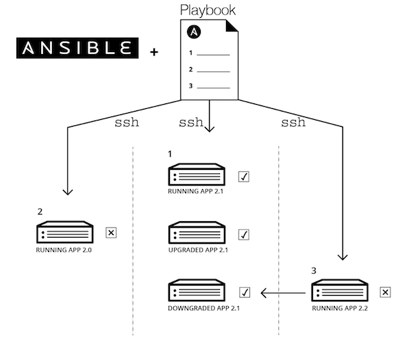

Install a Galaxy server with Ansible and GalaxyKickStart
Installation of a Galaxy server with Ansible and the GalaxyKickStart playbook¶
What is Ansible ?¶

Ansible is an automation engine that automates configuration management and application deployment.
Ansible reads instructions (Tasks) from a playbook and performs the indicated tasks on target machines (Hosts), through an ssh connection.
There is no magics: everything an "administrator" can do using command lines of a linux OS,
can be automated with ansible that "wraps" these command lines.
The power of Ansible (and similar orchestration software, ie Puppet, Chief, etc.) comes
from the abstraction of complex suite of commands in the Ansible syntax.
Moreover, automation allows to reproduce exactly the desired configuration.
Finally, Ansible is idempotent: whatever the initial configuration, it brings the target
to the exact same final state. This is useful to repair a broken configuration.
Ansible playbook - GalaxyKickStart¶
The Ansible "language" (Striclty speaking, Ansible language is not a programming language) is structured. Thus a playbook is not necessarily a single flat file. Multiple tasks can be gathered in a file, a "role" is the execution of a set of tasks, and a playbook can execute multiple roles.
GalaxyKickStart is an Ansible playbook that will
- install basic dependencies needed for Galaxy
- Create and manage all the linux users involved in the deployment of Galaxy
- Install and configure the services required for Galaxy:
- postgresql (database engine)
- nginx (web server)
- docker (containers)
- proftpd (ftp server)
- slurm (job manager)
- supervisor (service manager)
- Configure Galaxy for using these services
- Install tools and workflows using the bioblend API.
The code of the GalaxyKickStart playbook is freely available at the ARTbio GitHub Repository https://github.com/ARTbio/GalaxyKickStart.
Deployment¶
- start a GCE VM
2 procs, 7.5Gb RAM, Ubuntu 16.04, 50 Go disk, http enabled - connect to you VM using the Google ssh console
- start an interactive session as root using the command
sudo -i -
download the script
run_ansible_analyse_genomes_2019.shusing the command1
wget https://raw.githubusercontent.com/ARTbio/Run-Galaxy/master/deployment_scripts/run_ansible_analyse_genomes_2019.sh -
run the script using the command
1
sh run_ansible_analyse_genomes_2019.sh analyseGenomes_2019 -
When the deployment is finished, connect to your ansible-deployed "GalaxyKickStart" instance:
Just click on the url displayed in your Google Cloud Engine Console.
-
Connect to your server as an admin:
This time, ansible and the GalaxyKickStart playbook already programmatically registered an admin user. Just use the
admin@galaxy.org:adminas credentials (user:password)When logged in, see that required tools as well as workflows are already installed !
Transfert input data to you newly deployed Galaxy instance (for you incoming analyses)¶
- Click the main menu
User→Saved Histories - Press the top right button (above history list)
Import from file -
copy this url :
1
https://galaxy.pasteur.fr/history/export_archive?id=4c5da5ad7355ff42 -
repeat the same operation with:
and1
https://galaxy.pasteur.fr/history/export_archive?id=eb4c1d5564c9f78c1
https://galaxy.pasteur.fr/history/export_archive?id=69a1b70d1c4a6bdb
Content of the run_galaxykickstart.sh script¶
1 2 3 4 5 6 7 8 9 10 11 12 13 14 15 16 | #!/usr/bin/env bash set -e apt update -y apt install -y python-pip python-dev python-setuptools git htop echo "Upgrading pip" pip install -U pip /usr/local/bin/pip --version /usr/local/bin/pip install ansible==2.7.4 ansible --version git clone https://github.com/ARTbio/GalaxyKickStart.git -b $1 cd GalaxyKickStart/ ansible-galaxy install -r requirements_roles.yml -p roles/ -f cp scripts/8cpu_job_conf.xml roles/galaxyprojectdotorg.galaxy-extras/templates/job_conf.xml.j2 cp scripts/configure_slurm.py.j2 roles/galaxyprojectdotorg.galaxy-extras/templates/configure_slurm.py.j2 ansible-playbook -i inventory_files/analyseGenomes galaxy.yml echo "end of deployment\n" |
the run_ansible_analyse_genomes_2019.sh script explained
- The shebang line (
#!) says that it is a script code that has to be executed by the shell bash which can be found in the /usr/bin/env environment set -esays to the bash interpreter to exit the run at first error (to avoid catastrophes)- update apt package database
- installs
python-pip,python-dev,python-setuptools(these 3 packages are required to install pip),git(to clone and manage GitHub repositories) andhtop(a monitoring tool) using the package installerapt - Is just a command to inform the user about run state. This will prompt "Upgrading pip version" in the console
- does what is echoed before by the previous line : this is the command to upgrade the pip program that was
installed with installation of
python-pip.pipis a recursive acronym that can stand for either "Pip Installs Packages" or "Pip Installs Python". - will prompt the version of pip in the console
- install
ansible, version 2.7.4, usingpip - will prompt the version of ansible in the console
- clone the GalaxyKickStart Repository available at https://github.com/ARTbio/GalaxyKickStart.git,
creating locally the
GalaxyKickStartfolder. The repositorybranchthat is cloned is indicated as a parameter in the command line (the$1). - Changes directory, i.e. goes to /root/GalaxyKickStart
- Says to ansible to install additional roles (collection of files to control ansible)
which are not the the GalaxyKickStart repository but whose address is stated in the file
requirements_roles.yml. These roles will be installed in the subdirectory/root/GalaxyKickStart/roles/. NB:ansible-galaxyhas nothing to do with Galaxy, the name of this ansible command is serendipitous. - triggers the play of the playbook
galaxy.ymlby ansible. The target host of the playbook is defined in the fileinventory_files/galaxy-kickstart, as well as how ansible will interact with the target. Here, we play the playbook on the same computer (localhost). - Prompts the end of the deployment